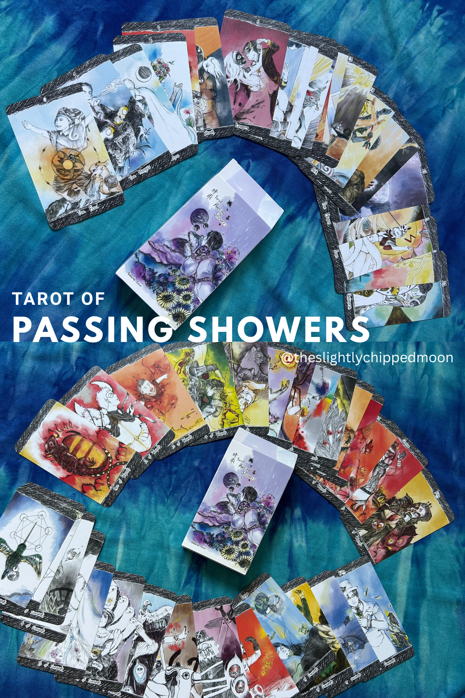
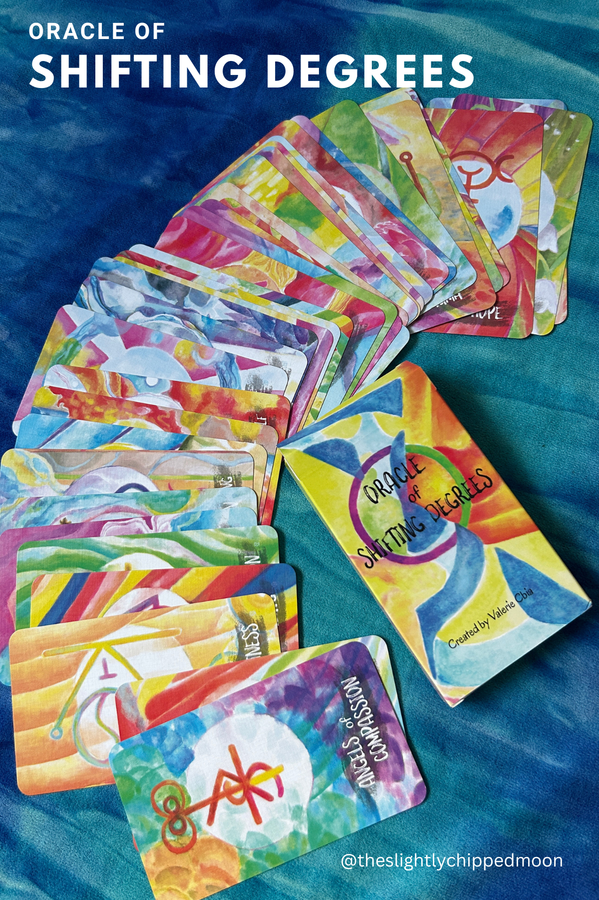

About Valkyrie
My artistic journey began at the tender age of 4.
A self-taught artist, I found inspiration in anime and manga, particularly the mesmerizing world of Sailor Moon. I love Sailor Stars by the way!
Fate intervened when I mistook an astrology book for an astronomy one, which led me into the world of spirituality, a journey I have embraced ever since.
I specialize in tarot/oracle/Akashic Records readings (along with a smattering of runes, plant spirits and astrology/fixed stars practices) and Theta healing. I believe in widening my boundaries of knowledge and applying what I learn to the nundane world.
And this is why I dabble in so many fields...
I am a very private person, but I know the kindest people will always adopt extremely introverted individuals. so do not hesitate to speak with me through the channels below!
What I’m Doing Now
🌓Shelfie at casual poet library: See my art works and books I am sharing with the community there.
🌕Upcoming Sharing on Fixed Stars: I will be presenting a talk at casual poet library on 25 July 2026 (Sat), 2 - 4pm. Find the materials here.
🌙Kindred Tarot meetups : Infrequent attendee nowadays, but I vouch for the openness and kindness you will find from the group, whether you are a beginner or an experienced practitioner.
🌗Still offering readings! Chat with me via Instagram or Substack!
My Works
Your support is deeply appreciated! 🌔

Tarot of Passing Showers
The Tarot of Passing Showers is inspired by Japanese animation and manga, sketched with ink and painted digitally.
Buy the deck
Flipthrough

Oracle of Shifting Degrees
This is a 35-deck of sigils, for readers to focus their intention on and shift to their ideal states. Painted with ink and enhanced digitally.
Buy the deck
Flipthrough
Past events
Under construction
Connect with me on:
Support me: